Meta 開源代碼世界模型 CWM
Meta FAIR 今日凌晨正式發布代碼世界模型 Code World Model（CWM），具備 32B 參數並提供 131k 上下文長度。該模型採開放權重策略，在軟體工程基準測試 SWE-bench Verified 上取得了 65.8% 的優異成績。為促進開源社群深入研究與應用，Meta 同時公開了訓練過程中的中訓、SFT 以及 RL 階段檢查點。這項發布讓 AI 能夠模擬程式員的思考流程，進一步推動代碼生成與除錯機制的演進。
Meta FAIR 今日凌晨正式發布代碼世界模型 Code World Model（CWM），具備 32B 參數並提供 131k 上下文長度。該模型採開放權重策略，在軟體工程基準測試 SWE-bench Verified 上取得了 65.8% 的優異成績。為促進開源社群深入研究與應用，Meta 同時公開了訓練過程中的中訓、SFT 以及 RL 階段檢查點。這項發布讓 AI 能夠模擬程式員的思考流程，進一步推動代碼生成與除錯機制的演進。

Anthropic 今日正式推出新一代旗艦級模型 Claude Sonnet 4.6，其 1M token 上下文視窗同步進入 beta 階段。官方測試顯示，用戶偏好度大幅超越前代 Sonnet 4.5 約七成，面對高階的 Opus 4.5 亦取得約 59% 的勝率，展現逼近頂級水準的編碼能力。在定價策略上，該模型維持每百萬 token 輸入 3 美元、輸出 15 美元的價格不變，提供極高性價比。目前 Sonnet 4.6 已全面成為 claude.ai 平台與 Claude Code 開發工具的預設驅動核心。
騰訊正式對外發布旗下全新旗艦模型 Hy4，採用 770B 參數的 MoE 架構並支援高達 100 萬 Token 上下文。這是混元系列首度原生支援高解析度圖像輸入，同時具備 CLI 與 GUI 的電腦操作控制能力。目前該模型已率先上線 TokenHub 與 OpenRouter 等通路供使用者體驗。雖然官方已承諾未來將以 Apache 2.0 協議釋出開源權重，但具體權重檔案目前尚未公開。

騰訊新模型 Hy4 上線首日市場需求極度強勁，迅速超出伺服器供給承載量。為解決算力吃緊問題，騰訊官方於 11 月 6 日緊急將 Hy4 的整體系統容量擴大十倍以滿足用戶需求。同時，官方宣布 WorkBuddy 平台上的 Hy3 免費使用權利將順延延長至 11 月 15 日。此外，TokenHub 的 API 介面亦推出五折優惠方案，該活動將一路持續至 12 月 31 日為止。

騰訊在 Hugging Face 平台上正式開源了名為 DSpine-b16 的草稿模型，並採用寬鬆的 Apache 2.0 授權條款。該架構創新性地透過逐層因果注入機制，大幅改善了模型在並行投機解碼過程中的運作效率。根據 SGLang 環境下的實測數據，執行 Agent 任務時的輸出速率成功由 210 token/s 飆升至 805 token/s，加速倍率高達 3.84 倍。這項技術大幅縮減了複雜智慧體在執行任務時的延遲，對即時推理場景具有重大助益。
在 DeepSeek 服務於一週內經歷第二次短暫中斷之際，全新的 V4.1 Pro 已正式展開灰度測試。LobeHub 開發者 MaxForAI 採用 LobeBench 基準對其進行實測，成績從舊版的 48%（24/50 題）大幅躍升至 64%（32/50 題）。此表現相當於在評測中多通過了 8 道高難度任務，實測結果高居目前國產模型首位。據相關消息傳出，該模型的正式版本預計將於下週內正式發布。

DeepSeek 首次正式對外公開了模型的帕累托前沿曲線，展現極為驚人的運行效率優化。新版 V4.1 Flash-1017 在單位任務成本上表現亮眼，僅為 Fable 與 Astra 等同類競爭模型的 1/100 至 1/20。在多數實際應用場景下，其 Token 用量較前一版本大幅縮減逾 50%，且 API 標價維持不變。此外，其在 DeepSWE v1.1 評測中的通過率提升至 77.0%，達成了極佳的性價比平衡。

月之暗面最新的產品研發路線圖於近日曝光，揭示了規模驚人的新一代旗艦模型 Kimi K4。該模型參數預計高達 5.4 萬億，體量約為前代 K3 的兩倍，預計將於 2027 年第二季度正式問世。在此之前，團隊還規劃了參數達 3 萬億的 K3.5 作為過渡版本，預計在 2027 年、可能於春節前後率先推出。這份藍圖顯示國產大型語言模型正朝向極致規模加速推進，目標直指頂尖級別實力。

月之暗面宣布旗下 Kimi K3.1 Pro 模型自 11 月 5 日起正式上線微軟 Foundry 平台。該模型具備圖文多模態理解能力，並支援最高達 100 萬 Token 的超長上下文處理視窗。這項合作創下了微軟雲平台首度針對開源權重模型採用商業分成模式的先例。此舉也是月之暗面繼進駐 AWS 生態之後，成功落地的第二家全球頂級頭部雲端運算平台。
月之暗面正式發布全新的 7×24 小時 Kimi Hosted Agents 託管智慧體服務。該服務將底層支撐 Agent 穩定運行的專用架構 Harness，直接以雲端託管模式開放給企業與開發者調用。在發布同日的凌晨時分，官方亦同步釋出了 Kimi K3.1 Pro 的完整模型權重檔案。此重大開源舉措引起了業界高度關注，英偉達 AI 官方社群帳號亦特別發文對此表示祝賀。
Kimi K3.1 Pro 在底層採用了獨特的混合注意力結構，包含 69 層 Kimi Delta Attention 與 24 層 Gated DSA。該模型透過引入由 DeepSeek 提出的動態稀疏注意力機制（DSA），有效突破了長序列解碼時的算力瓶頸。根據 vLLM 釋出的技術分析顯示，在長上下文解碼情境下，相關注意力層的記憶體讀取量可降至傳統稠密 MLA 方案的約 23%。這項架構改進大幅緩解了顯存頻寬壓力，為大規模長文本推理提供了關鍵的工程化落地支持。
（後續）先前阿姆斯特丹雲棲大會傳聞所指稱的 11 月 2 日至 8 日 Qwen4 發布週即將結束，但開源社群仍未見其蹤影。目前在 Hugging Face 的 Qwen 官方帳號下，依然沒有任何與 Qwen4 相關的模型權重上架。阿里巴巴團隊僅於 11 月 6 日在 X 平台發布了一張寫有「北冥有魚 其名為_」的預熱海報，並未透露確切型號名稱與登場日期。市場盛傳的 Qwen4-Max、Plus、Flash 以及 27B 等衍生版本，至今皆尚未獲得官方的正式確認。

百度宣布開源輕量級 MoE 架構大模型 ERNIE-5.5-Flash-Base，總參數達 280B 但每 token 僅需激活 14B。該模型歷經高達 33.5T tokens 的海量數據訓練，上下文長度可擴展至 1M，目前其 FP8 與 BF16 權重均已同步上架至 Hugging Face。官方基準測試資料指出，該模型在絕大多數評測項目中的表現均超越了 DeepSeek-V4-Flash-Base。極低的激活參數與超長上下文支援，使其在邊緣計算與大規模成本敏感型業務中展現高度競爭力。

由 OpenAI 前技術長 Mira Murati 創辦的 Thinking Machines Lab，正式對外發布了 Inkling 2 Small 模型。該架構為總參數量 594B 的混合專家模型，推論時每 token 僅需啟用 17B 參數。其在 AA 智能指數獲得 31 分，並於企業基準測試 EnterpriseBench-CoreCraft 中取得了 71.8% 的高分成績。這款性能逼近前沿模型的權重預計將於下週以寬鬆的 Apache 2.0 授權向大眾開源釋出。

OpenAI 正式推出了專門針對授權資安研究打造的專用模型 GPT-6 Cyber，重點強化漏洞攻防評估。該模型在安全評測 ExploitGym 取得了 48.5% 的水準，相較前代版本的 32.1% 呈現大幅度增長。在商用 API 定價方面，該模型設定為每百萬 token 輸入 20 美元、輸出 100 美元，定價水準顯著高於 Anthropic 與 Google 的同類資安模型。目前該服務在初期採取受限策略，僅優先開放給受邀的 Daybreak Red 客戶使用。
Google DeepMind 宣布旗下多模態視訊生成模型 Gemini Omni 1.2 Flash 首度結束測試，全面邁入 GA 正式商用階段。該版本支援生成長度介於 3 至 15 秒的視訊片段，並且具備多輪對話式的互動編輯修改功能。在定價方面，720p 規格定為每秒 0.07 美元，使用費用較先前的 1.1 版本便宜了約 30%。目前這項更新已同步在 Gemini API 以及 Google Cloud 雲端平台全面上線運作。

Hugging Face 官方部落格於 11 月 5 日撰文回顧了新創團隊 Gradium 於 10 月 20 日開源的裝置端 TTS 語音模型 Phonon。該端側語音模型在發布短短兩週內，全球累計下載量便迅速突破了 20 萬次大關。在 HF Open TTS Leaderboard 的權威評測中，Phonon 於德語及西班牙語的可懂度項目雙雙奪下第一名寶座。此外，其在所有受評語言項目中的成績均名列前三，展現了小型端側語音合成技術的實用性。

前 Google 首席科學家 Jeff Dean 投資的新創 hillclimb 於 11 月 8 日發布新基準 DeepRSI，專門評估大模型的遞迴自我改進與自主科研能力。Kimi K3 在該基準拿下 820 分，排名全球第三，同時是國產模型與開源模型的第一名。這個成績超過了 Grok 4.7 與 Gemini 3.8 Flash，顯示 Kimi K3 在「自我改進」這類前沿能力上已躋身全球前段班。DeepRSI 考驗的不再是單次作答，而是一個模型能否在研究過程中自我迭代、越做越好。Kimi K3 的表現，為中國開源模型在科研智能體賽道上再添一個有力佐證。
VIDRAFT 的開源權重模型 Darwin-180B-RSI-R3 在 SuperCLUE 11 月榜的數理與科學推理單項拿下 73.68 分，僅次於 GPT-6.1-Sol 的 76.32 分，位居開源模型第一。該模型的總分則為 43.08 分，在榜單上排名第 9，權重以 Qwen 社群授權釋出。數理推理向來是封閉前沿模型的強項，開源模型能在單項逼近榜首，顯示開源陣營的推理能力正在快速收斂差距。Darwin 的成績也說明，180B 這個量級的開源模型已能在硬核推理任務上與頂級模型同場競技。對需要本地部署推理能力的團隊而言，這類開源選項的實用價值正在上升。
新智元報導的 QIQCBench 以 49 項真實量子工程任務測試 17 個頂尖 Agent 系統，結果呈現斷崖式分化。受測系統包括 DeepSeek-V4 系列、千問、混元、Kimi、智譜 GLM 與字節 Seed 等，通過率自最高的 78% 垂直跌落至 3%。前三名系統的通過率為 64%，其餘 14 個模型合計僅 4%，顯示多數 Agent 在真實量子工程任務上幾乎無法完成工作。GPT-5.6 與 Opus 在該基準上斷層領先，拉開了與其他模型的巨大差距。這份基準提醒業界，Agent 在專業工程領域的實用門檻遠比通用對話任務高得多。

11 月 8 日的 Hugging Face 熱門本地 LLM 榜由 xtools-at 釋出的 DeepSeek-V4-Pro-Qwen3.5-9B-UNCENSORED-heretic 領跑，顯示社群對 DeepSeek 新版的改版與微調版本熱情不減。ccore 的 Qwen3.5-4B-GLB-3D-Coder 於 11 月 6 日更新後衝上第 4 名，累計下載量達 24.5K，webAI 的 TwIL-8B 則分列第 5 名。熱門榜的變化反映出開發者當下最想實際下載、部署的模型，而不只是實驗室的宣傳焦點。Qwen3.5 系列的小模型能在榜上佔據多席，也說明輕量模型在本地部署場景的需求持續旺盛。社群改版模型的登頂，則凸顯開源生態「官方發布、社群再造」的活力。
LMArena 文字榜的風格控制版本於 11 月 6 日更新數據，Gemini 4 Carbon 以 1539 分登頂，Gemini 4 Argon 以 1530 分居次，Claude Fable 5.1 則以 1514 分排第三。風格控制榜衡量的是模型在遵循語氣、格式與表達風格要求上的表現，屬於貼近實際寫作與溝通場景的能力。Gemini 4 家族包辦前兩名，顯示其在細膩的風格遵循上具備優勢。Claude Fable 5.1 緊追在後，兩者分差僅 25 分，競爭仍相當接近。隨著 AI 寫作助手越來越講究「寫得像人要的樣子」，這類分榜的參考價值也隨之提升。
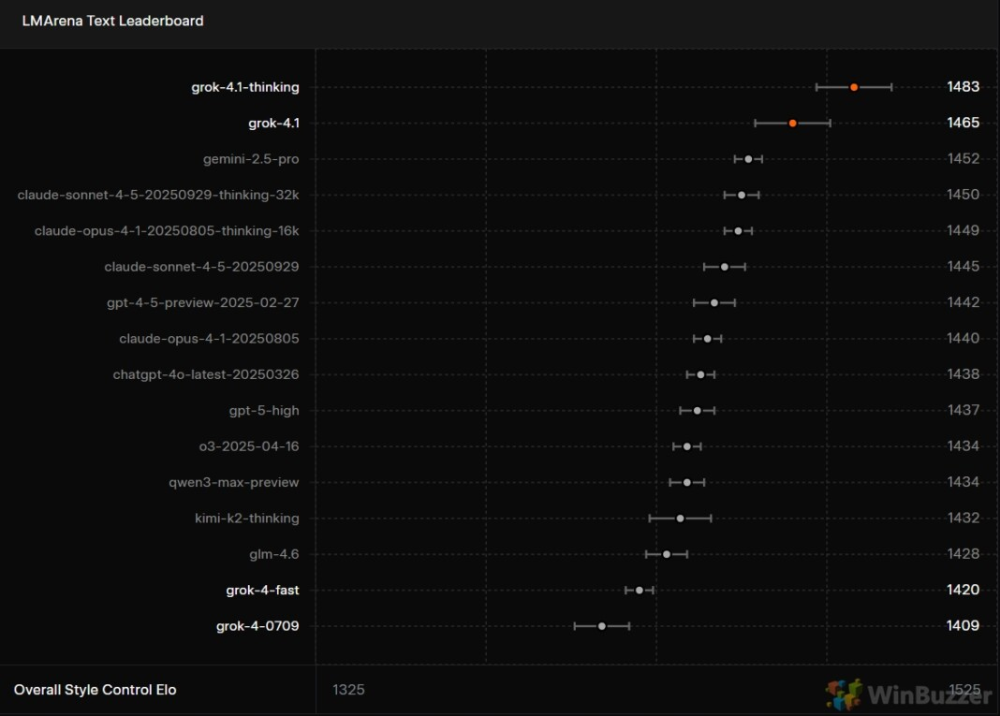
（後續）LMArena 多輪對話榜 11 月 6 日數據顯示，Gemini 4 Carbon 由昨日的 1559 分升至 1565 分，續居榜首，Gemini 4 Argon 以 1542 分居次，Muse Wonder 則以 1514 分排第三。分數的微升來自對決樣本的滾動更新，而非模型本身的改版，但仍反映 Gemini 4 在長時間、多輪對話中的穩定優勢。多輪對話能力考驗模型追蹤上下文、維持一致性的基本功，直接影響 AI 助手與 Agent 在長時間協作中的體驗。Gemini 4 家族再度包辦前兩名，與其長上下文的設計優勢相互呼應。隨著 Agent 任務越拉越長，多輪榜的排名可能比單輪總榜更能預示實際可用性。
LMArena 專家知識榜 11 月 6 日最新數據顯示，Gemini 4 Carbon 以 1587 分居首，Gemini 4 Argon 以 1554 分居次，Claude Opus 5 則以 1553 分排第三。專家知識榜專門衡量模型在專業領域知識問答上的表現，是檢驗模型「懂行」程度的硬指標。Gemini 4 家族再度包辦前兩名，且榜首分數逼近 1600 分大關，顯示其在知識密度上的領先。Claude Opus 5 僅以 1 分之差落後第二名，顯示前沿模型在專家知識上的競爭已進入個位數分差的拉鋸。對需要專業問答的應用場景而言，這份榜單比通用總榜更具選型參考價值。
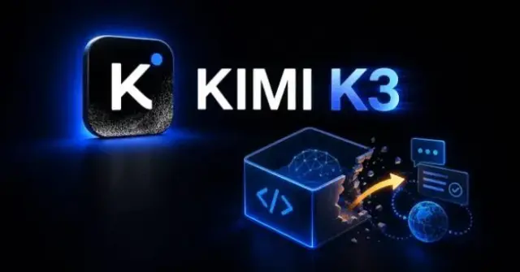
LMArena 程式設計榜 11 月 6 日最新數據顯示，Gemini 4 Carbon 以 1565 分居首，Claude Opus 5.5 以 1546 分居次，Gemini 4 Argon 則以 1540 分排第三。值得注意的是，Kimi K3 以 1507 分排第 15 名，成為前 15 名中少數的中國開源模型，顯示其編程能力已躋身全球第一梯隊。程式榜衡量的是模型在程式開發任務上的實戰能力，是開發者選型時的重要參考。榜首與第 15 名之間僅差 58 分，說明前沿編程模型的實力分布相當密集。Kimi K3 的入榜，也讓開源模型在編程場景的競爭力再獲一次公開驗證。

LMArena 搜尋榜 11 月 6 日最新數據顯示，GPT-5.6 Sol 以 1255 分居首，GPT-6.1 Sol 以 1247 分居次，榜單共有 42 個模型配置有成績。搜尋榜考驗的是模型結合即時網路搜尋作答的能力，屬於 Agent 瀏覽與查證任務的核心指標。GPT-5.6 Sol 與 GPT-6.1 Sol 包辦前兩名，顯示 OpenAI 在「上網查資料再回答」的實戰能力上仍具優勢。不過兩者分差僅 8 分，顯示 GPT-6.1 家族已快速追上前代旗艦。隨著聯網搜尋成為 Agent 的標配能力，這項分榜的排名變化值得持續追蹤。
（後續）OpenRouter 截至 11 月 7 日的週榜顯示，DeepSeek V4.1 Flash 1017 單週處理 56.04T token、佔比 34.2%，續居首位，較昨日快照的 56.2T 幾乎持平。GLM 5.3 Flash 以 13.51T 排第三，騰訊 Hy4 則以 10.06T 新入榜即排第四，顯示發布後短短數日內市場採用迅速爬升。OpenRouter 的用量榜反映的是開發者真金白銀的選擇，而非實驗室自報的分數，DeepSeek 單一模型佔去三分之一以上的用量，斷層領先的格局未變。Hy4 的快速入榜，也讓中國模型在全球開發者生態中的滲透再添一例。隨著新模型陸續上線，週榜前四的版圖可能還會繼續洗牌。
Anthropic 於 11 月 5 日推出 Claude「Personal Finance」測試版，讓 AI 助手正式跨入個人理財場景。使用者經 Plaid 連結銀行與信用卡帳戶後，Claude 可以唯讀方式分析支出、標示重複扣款與異常費用，協助使用者看懂自己的錢花去哪裡。該功能僅開放美國 Pro、Max、Ultra 付費用戶，且只能讀取、不能轉帳付款，顯示 Anthropic 在敏感的金融資料上採取了相對保守的起步策略。AI 助手開始碰觸銀行帳戶，意味著個人助理的戰場正從聊天與寫作，延伸到真正與錢有關的日常決策。這一步能否贏得使用者信任，將取決於資料安全與使用邊界的拿捏。
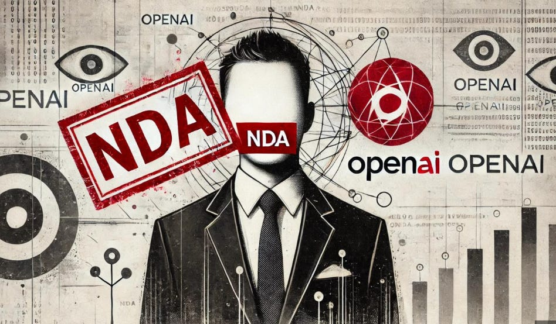
OpenAI 於 11 月 5 日發布 National Community Compact，承諾未來自有自營的 AI 園區不再要求公職人員簽署保密協議，並支付全部用電與相關基建成本，同時公開用水、用電與噪音數據。這項承諾直接回應了期中選舉後各地對資料中心擴張的反彈聲浪，地方選民擔心 AI 基建推高電價、耗水並規避監督。OpenAI 把資料中心改稱「compute campuses」，並以公開數據與自付成本爭取社區接受，顯示科技巨頭已意識到基建擴張不能只靠遊說，還得拿出可驗證的讓步。這份契約能否成為業界範本，將看其他雲端業者是否跟進。
（後續）METR 審計指出 Anthropic 模型進步速度約為一年前兩倍後，引發的爭議在 11 月 7 日延燒，The Verge 報導 Anthropic 共同創辦人 Sam McCandlish 親自在 X 上出面辯護。McCandlish 稱公開加速細節會洩漏商業機密，等於把路線圖送給對手，因此報告中大量內容遭到塗黑。值得注意的是，報告另揭露三款在 2026 年 7 至 10 月完成訓練、尚未發布的 Anthropic 內部模型，顯示其模型儲備比外界所見更為豐厚。這場辯護凸顯了 AI 安全審計的兩難：越透明越能取信公眾，洩漏的競爭情報也越多。
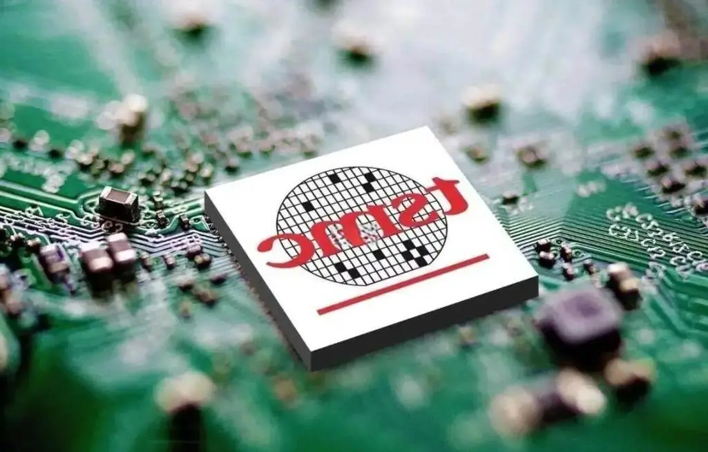
（後續）The Information 於 11 月 6 日報導台積電應輝達要求研議生產 3D DRAM 後，台積電發言人隨即向 Tom's Hardware 回應，公司始終專注核心業務，也就是專用晶圓代工，實質否認了該報導。原始報導稱，輝達希望台積電投入先進記憶體以緩解 AI 浪潮下的全球記憶體短缺，若成真將直接挑戰三星、SK 海力士與美光的版圖。台積電的迅速否認，顯示其無意偏離代工本業，也讓這場「跨界記憶體」的傳聞暫時畫下句點。不過記憶體短缺的壓力仍在，輝達是否另尋他法保障供應，仍值得觀察。
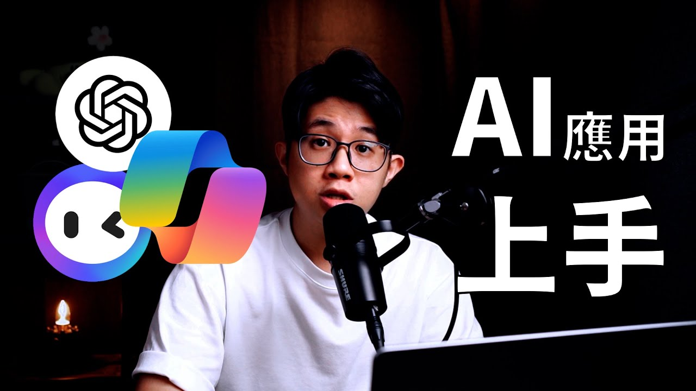
彭博報導，蘋果已在 10 月把部分工程師每日 AI 支出上限從 300 美元降至 200 美元，未來可能進一步降至 100 美元，非工程團隊則考慮降至每日 25 美元。這項撙節措施由執行長 John Ternus 主導，反映蘋果正在收緊內部的 AI 使用成本。對一家市值數兆美元的公司而言，連工程師的 AI 額度都要逐級下調，說明 AI 推論成本的帳單已經大到連蘋果都必須正視。隨著各家企業把 AI 工具全面鋪開，如何管控 token 支出而不拖慢開發效率，將成為共同的營運課題。
Uber 向分析師透露，第三方 AI 代理上季僅安排了 4 趟乘車，萬聖節當週約 500 筆 Uber Eats 訂單，對比同期 3.2 億趟次與訂單幾乎可以忽略不計。執行長表示，平台被 AI 代理中介化的擔憂目前只是小數點，顯示「代理幫你叫車、點餐」的敘事還遠未成真。這個數字為火熱的 Agent 經濟潑了一盆冷水：即便技術上可行，使用者目前仍習慣自己打開 App 下單。對 Uber 而言，代理流量微不足道反而是好消息，意味著其直接面對消費者的地位短期內不受威脅。
Adweek 報導，Anthropic 在期中選舉前與美聯社簽下內容與數據授權協議，Claude 在選舉夜可提供註明 AP 來源的即時開票數據。這是 Anthropic 首度付費授權數位新聞出版商的內容，標誌其從過去的爭議取用，轉向與新聞業建立正式合作。對 Anthropic 而言，取得 AP 的即時開票數據，讓 Claude 在選舉這類時效性極強的場景中有了可信的答案來源。對新聞業來說，這筆交易則是 AI 公司願意為內容付費的又一例證，可能成為後續授權談判的定價參考。
新創 Aina 於 11 月 5 日開放智慧戒指預購，配備 OLED 小螢幕、拇指按鍵與語音輸入，定位為 AI 代理的遙控器，早期預購價 399 美元、正式定價 499 美元，預計 2027 年初出貨。這款戒指的構想是讓使用者不必掏出手機，就能以按鍵與語音指揮 AI 代理處理任務，把「代理」從螢幕裡拉到手上。隨著 AI 代理開始代辦越來越多雜事，專屬的硬體入口成為新創切入的機會，戒指、手錶、眼鏡都在爭奪這個位置。Aina 能否從概念走向實用，關鍵在於代理本身是否夠可靠到值得隨身攜帶一個遙控器。
ZDNET 實測搭載輝達 RTX Spark 的 HP Omnibook Ultra，以 llama.cpp 在本地跑 Qwen3.8-27B 開源模型與 Cline 編碼流程，完成 479 次推論、近 5,000 萬 token，總成本為零美元。這項實測凸顯本地 AI 的兩大優勢：不用付 token 費用，資料也不必上傳雲端。對開發者而言，一台筆電就能零成本跑 27B 模型做完整專案，意味著雲端 API 不再是唯一的選項。隨著裝置端算力持續提升，「本地先行、雲端備援」的工作流可能成為越來越多開發者的預設選擇。
Tom's Hardware 報導，六托盤、價值約 1,140 萬美元的輝達 GPU 在加州遭貨運劫案竊走，貨車於 8 月 29 日自奧克蘭出發前往德州後失蹤，迄今無人被捕。AI 晶片供不應求、單價高昂，使其成為貨運竊盜眼中的高價值目標，這起案件正是晶片短缺衍生的治安副產品。貨物失蹤超過兩個月仍無下落，也顯示高價晶片的物流追蹤與保全仍有缺口。隨著輝達進一步收緊晶片流向追蹤，這類失竊晶片要流入正規市場將越來越難，但黑市風險仍在。
IEEE Spectrum 報導，歐盟 AI 法案要求 AI 生成文本加浮水印，但測試顯示 OpenAI 於 10 月發布的 textGrain 在文本少於 150 字或經編輯後常失效，是否符合法規仍不確定。浮水印技術的難題在於，短文本的統計信號本就微弱，稍加改寫就可能抹除痕跡，技術與法規的要求之間存在落差。OpenAI 的 textGrain 是業界少數公開的文本浮水印方案，若連它都難以穩定通過合規門檻，其他業者的處境只會更艱難。這項爭議將迫使監管方與技術方重新對焦：浮水印究竟是可驗證的合規工具，還是僅具宣示意義的要求。
（後續）TechCrunch 分析指出，期中選舉後民主黨揚言加強 AI 監管，矽谷過去兩年與川普政府建立的關係面臨重整，科技巨頭正從政策制定的座上賓變成被質詢的對象。報導點名 OpenAI 雇用參議員舒默之女、把資料中心改稱「compute campuses」等動作，被批評為公關粉飾，顯示業界試圖以話術與人事布局緩解政治壓力。除了多項全新的 AI 監管法案正在國會醞釀，針對高耗能資料中心的新建禁令也成為政界討論焦點。這股政治氛圍的轉變意味著，科技巨頭過去享有的政策禮遇正在收回，AI 產業將迎來更嚴格的立法盤查。
The Verge 記者實測 NYT Cooking 的 AI 助手規劃平日晚餐，結果呈現明顯落差：雞肉料理的建議頗有幫助，做蛋糕時卻出了問題。這個小實驗恰好映照出食譜 AI 的現狀——在步驟明確、容錯率高的家常菜上表現不錯，一旦涉及精確比例與火候的烘焙，短板立刻現形。食譜看似是 AI 助手最容易落地的生活場景，但「好吃」背後的經驗與細節，仍不是光靠語言模型就能完全複製的。對想把 AI 推進廚房的業者而言，蛋糕這一課提醒他們：生活場景的最後一哩路，往往比技術演示更難走。
Ballotpedia 統計顯示，10 個州的 41 項地方數據中心議案中，限制興建的一方贏得 40 項，僅北達科他州 Harwood 一案例外，顯示 AI 基建擴張遭遇強烈的地方反彈。德州新任州長更承諾暫停新數據中心審批，把地方層級的阻力推向州級政策。選民反對的理由多半圍繞電價上漲、用水與噪音，以及開發案缺乏透明度，與 OpenAI 隨後發布社區契約的時機相互呼應。對雲端業者而言，土地與電力之外，「社區同意」已成為資料中心選址的第三道關卡。這波公投結果可能迫使整個產業重新思考擴張的節奏與溝通方式。
Apiiro 研究發現，Claude Code 的「Yes, and don't ask again」功能會把含密碼的完整指令明文寫入 .claude/settings.local.json，公開 GitHub 上 104,185 份拷貝中有 1122 份含至少一個真實密鑰、共計 1379 個。一個為了省去重複確認的便利設計，意外成了憑證外洩的管道，開發者往往沒意識到自己的 API 金鑰已被寫進可能公開的設定檔。這起事件凸顯 AI 編碼工具的安全邊界問題：工具越主動、權限越大，使用者越難察覺它在背後寫了什麼。對所有使用 AI 編碼助手的開發者而言，檢查設定檔是否含有敏感資訊，已成為必要的安全習慣。
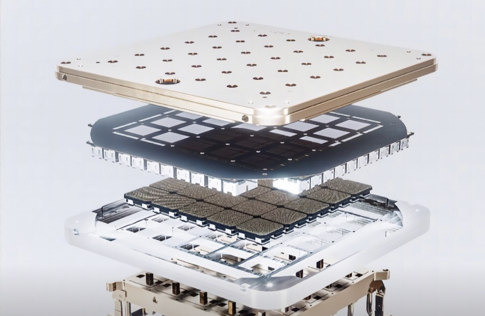
（後續）特斯拉公布更新版 AI 加速器路線圖細節，第六代推理加速器 SI6 算力預計為 HW4 的 80 倍、記憶體達 9 倍（約 144GB），預計 2029 至 2030 年推出，採用三星 2nm 製程。與此同時，Dojo D3 訓練加速器改為多芯粒加上堆疊 HBM 的設計，並將面向太空部署，顯示特斯拉把算力布局延伸到了地球之外。特斯拉把原有的 AI4、AI5、AI6 全面更名為 SI 系列，象徵「超級智慧」的品牌野心。這份路線圖的兌現與否，將直接決定特斯拉自駕與機器人業務的算力自主權能走多遠。
Anthropic 於 11 月 5 日推出推論鉤子與安全中心，讓企業客戶可以把 Claude Enterprise 的提示與工具呼叫，先送交自家的 DLP 與資安伺服器審查，在生成前攔截不合規的回應。推論鉤子正式上線的同時，beta 版安全中心與集中管理功能也同步推出，瞄準金融、醫療等受監管產業。當 AI 助手開始處理企業內部敏感資料，誰能看見什麼、什麼不能說，都需要一道企業自己掌控的檢查關卡。Anthropic 此舉等於把一部分的把關權交還給客戶，有助於打進對合規要求最嚴格的市場。
Meta 於 11 月 6 日開始向全體 Muse 與 Meta AI 用戶推送以 Muse Wonder 訓練的特化模型，具備 Active Memory 主動記憶與 Active Focus 主動專注兩項能力。官方數據稱，Active Memory 讓模型少忘 2.4 倍，Active Focus 則讓模型在遇意外狀況時的任務完成率提升 67%，內部個人超級智慧指數由 38% 升至 47%。把原本高階版本的記憶能力下放給所有用戶，顯示 Meta 認為「記得住使用者」是 AI 助手留住人的關鍵。這也意味著個人 AI 助手的競爭，正從單次回答的聰明程度，轉向長期相處的記憶與專注能力。
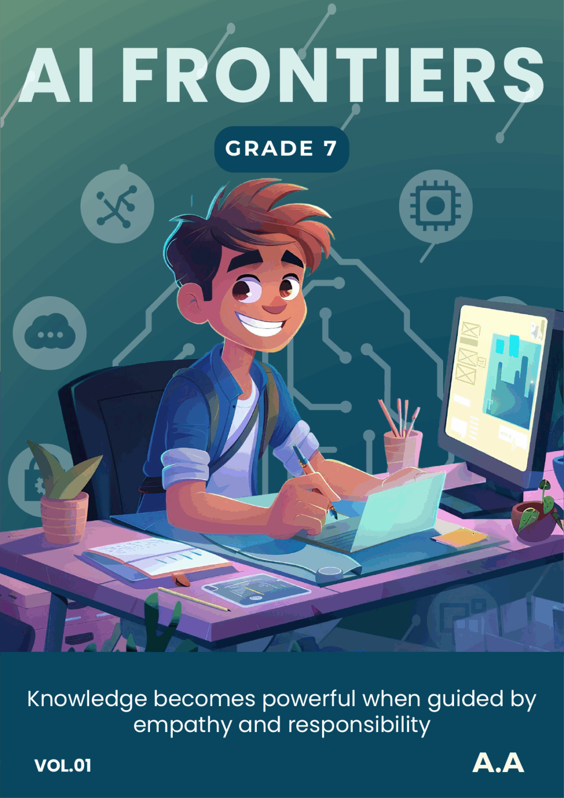
微軟於 11 月 7 日正式關閉 AI Frontiers 前沿研究小組，長期主導線上學習研究的知名學者 John Langford 同日離職，公司未說明具體原因。這項人事與組織異動，顯示微軟的研究重心進一步向商業應用傾斜，前沿探索的空間正在收縮。AI Frontiers 的關閉，對學術界而言是一個訊號：即便是微軟這樣的巨頭，也在重新評估純研究團隊的存續價值。當研究與產品的距離越拉越近，實驗室的組織形態也隨之改寫，學者出走或轉向創業可能成為常態。
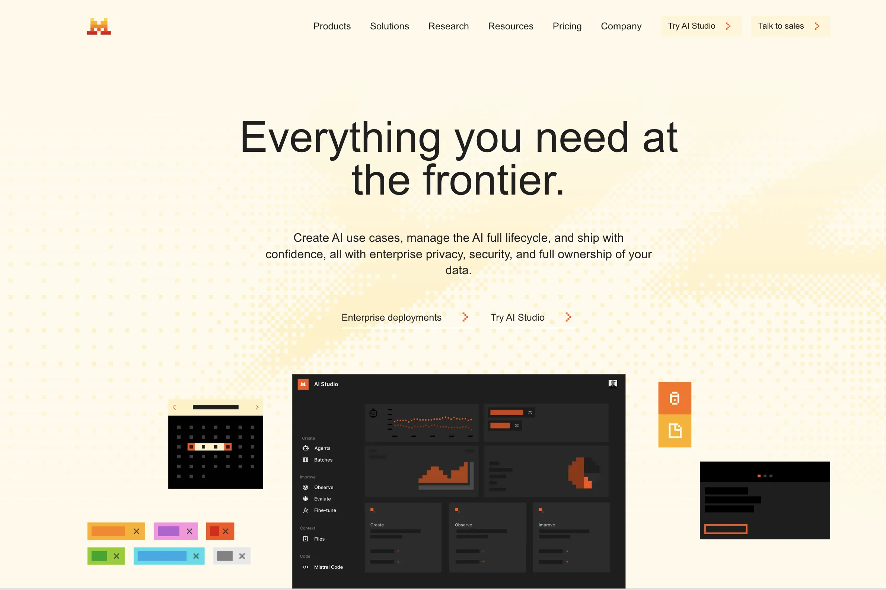
Mistral AI 於 11 月 5 日擴充企業平台 Mistral Studio，新增託管 Agent、Agents SDK、自然語言工作流程建構器、Apps CLI 與評估追蹤功能，多數功能已進入公開預覽。該平台以開放權重的 Mistral Large 4 為基礎，ABANCA、BNP Paribas 等金融機構已在生產環境使用，顯示開放權重模型正在企業級 Agent 場景中找到落腳點。對 Mistral 而言，Studio 的擴充是把「開放權重」轉化為「企業服務」的關鍵一步，也是與 OpenAI、Anthropic 企業方案正面競爭的布局。歐洲開源陣營能否靠企業服務站穩腳步，Mistral Studio 的採用情況將是指標。
微軟、Alphabet、亞馬遜與 Meta 第三季合計資本支出高達 2087 億美元，展現出對算力基建的強勁需求。四大科技巨頭針對 2026 年的全年指引合計落在約 7200 億至 7400 億美元之間，顯示雲端軍備競賽並未放緩。這些龐大的資金絕大多數流向了 AI 資料中心的建設與升級。高盛估計，其中約有 1800 億美元將專門用於採購 GPU 與各類 AI 加速器晶片。如此空前的資本支出規模，也確立了算力供應鏈在未來數季持續獲得龐大金流的基礎。
（後續）晶片類股在經歷前日暴跌後於週五迎來強勁反彈，其中 AMD 單日大漲 11.04% 至 449.04 美元，輝達也上漲 2.78% 至 186.64 美元。費城半導體指數當日同步揚升約 4.2%，反映出逢低買盤的介入。然而，該指數週五僅收復了週四約三成的跌幅，未能完全扭轉市場頹勢。在經歷連番震盪後，全週表現仍創下數月以來的最慘紀錄。這顯示投資人雖然在跌深後進場搶反彈，但對半導體板塊的信心依舊脆弱。
（後續）據彭博報導，部分潛在買方所討論的 Anthropic 首次公開發行（IPO）估值，已滑落至 1.2 兆至 1.3 兆美元區間。這一預期數字明顯低於先前市場傳出的 1.5 兆至 2 兆美元水準。估值下修的主因源自市場氣氛轉趨謹慎，買方對超高估值的接受度正在降低。與此同時，投資人也對原定於 11 月 9 日當週啟動的投資路演時程提出質疑，擔憂其能否如期順利推行。這項變數可能為近期備受矚目的 AI 超級獨角獸上市計畫增添新的波折。
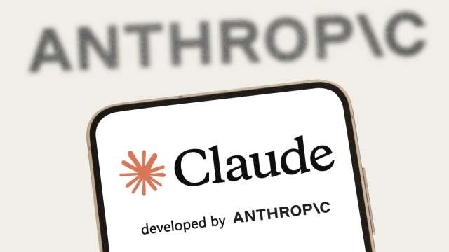
Anthropic 最新修訂的招股書顯示，公司第三季營收達到 169.6 億美元，較去年同期大幅暴增 1127%。然而，其單季營收季增率出現明顯降溫，由第二季的 144% 放緩至約 47%。針對成長減速的現象，公司在招股文件中將主因歸咎於算力產能限制、夏季季節性放緩以及降價折扣。儘管整體規模仍維持高速倍增，但季增率大幅下滑可能引發市場對高增長可持續性的重新評估。這一財務數據的揭露，也成為影響其後續 IPO 估值走勢的關鍵因素。
（後續）新興雲端算力服務商 CoreWeave 的五年期信用違約交換（CDS）在週四衝破 1289 基點的高點後，週五已回落至約 1155 基點。儘管違約保險成本有所緩解，但該公司 2032 年到期的債券殖利率仍處於 16% 以上的高檔。居高不下的殖利率顯示出，債券市場對該公司的財務體質依然維持著高度警戒。目前整體市場正高度聚焦於 CoreWeave 即將在 11 月 10 日公布的第三季財報。這份財報將成為檢驗其依賴高負債進行急速擴張的營運模式能否持續維持的關鍵考驗。
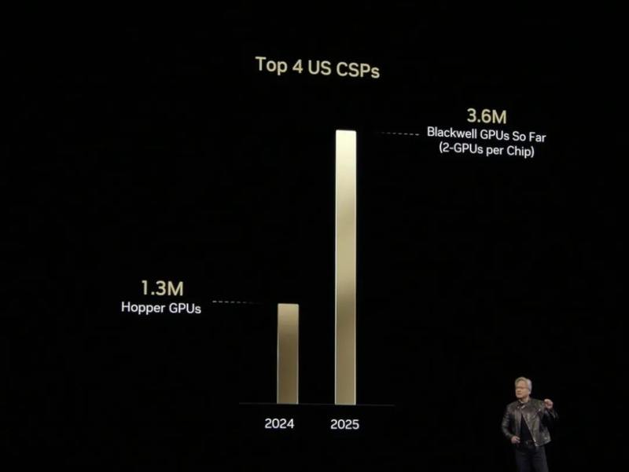
國際研調機構 Gartner 近期發布預警，指出新興雲端業者（neocloud）未來恐將被迫宣布大規模的資產減值。該機構分析，造成減值風險的關鍵核心在於資料中心內部 GPU 的實際可用年限，折舊政策將直接衝擊財務表現。以該領域指標企業 CoreWeave 為例，其目前背負的總債務金額已攀升至約 356 億美元的高水位。與此同時，市場對其營運風險的疑慮也反映在資本市場，其空頭部位佔比已來到約 14%。這項警訊凸顯出重資產採購 GPU 的營運模式正面臨資產價值重估的嚴峻挑戰。
網通晶片大廠 Marvell 宣布以全股票交易方式收購光學元件商 Lumentum，該案企業價值高達 1150 億美元。這筆交易一舉躍升為半導體發展史上規模最大的併購案之一，顯示出算力光互聯需求的重要性。在同一週之內，量子運算商 IonQ、資安大廠 CrowdStrike 以及 Shield AI 等業者亦先後宣布了收購動作。頻繁且龐大的交易使得併購案連續第三週壓過單一融資案，成為科技資本市場的主旋律。晶片與系統大廠正加速透過策略整合，以鞏固在 AI 基礎架構競賽中的關鍵技術。
投行伯恩斯坦最新分析指出，依照 OpenAI 目前已披露的算力合作協議計算，其至 2030 年的累計支出將高達約 6140 億美元。雖然這項估算金額龐大，但仍低於市場先前所廣泛流傳的 7500 億美元天價。報告進一步預測，OpenAI 的年度算力資本支出峰值將會落在 2031 年，屆時單年支出預計將達到 1840 億美元。這項數據描繪了頂尖大模型開發商在訓練與推理架構上的龐大資本承諾。模型規模的不斷擴張，迫使領先者必須在未來數年持續鎖定天文數字般的基礎設施投資。
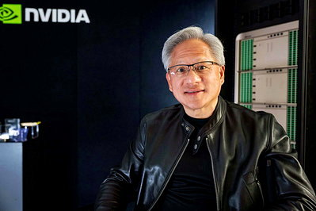
據知情人士透露，輝達已開始要求全球雲端供應商與資料中心合作夥伴，必須確保新合約中至少 51% 的算力業務來自非中國客戶。此舉意味著任何涉及中國客戶的算力合約佔比將受到嚴格限制。此外，輝達進一步收緊了硬體流向的追蹤機制，東南亞地區的供應商必須登記加入 Fleet Intelligence 系統方能取得認證資格。這套追蹤系統旨在掌握晶片的部署動向與實際使用狀態。這項合規新政策凸顯出輝達正全力配合出口管制法規，嚴防先進算力資源迂迴流入受限市場。
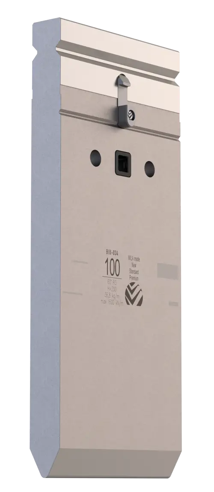
目前約有 60 萬顆輝達 H200 先進晶片堆放在香港倉庫中，正面臨無法入境中國市場的困境。這批晶片的總貨值估計高達 200 億至 300 億美元，形成龐大的供應鏈滯留。儘管美國政府先前已放行該批產品的出口許可，但中國監管當局卻遲遲未批准大規模清關作業。相關決策背後的主因在於北京當局意圖藉此扶植本土半導體產業發展，因而採取嚴格的卡關措施。現階段官方僅放行少量配額供特定企業進行模型訓練，造成大規模高階算力硬體閒置於邊境口岸。
《紐約時報》最新調查報導揭露，美國商務部先前核准了約 24 家中國企業負責經手組裝輝達 H200 晶片。然而調查發現，其中包含 New Matrix 在內的多家獲准公司，在官方登記地址上根本查無任何實體辦公室運作。更引發爭議的是，部分獲准企業的股東背景與早已被美國官方列入黑名單的制裁基金有所關聯。這起調查暴露了高階晶片監管體系在實質審查上出現的重大漏洞。美國聯邦眾議院共和黨主席已對此採取行動，正式要求輝達執行長黃仁勳於 11 月 18 日親自出席說明。

高通公布最新一季財務數據，受終端市場需求疲弱影響，其手機晶片營收年減 26% 降至 51.4 億美元。儘管公司整體營收仍達到 104.4 億美元優於市場預期，但手機核心業務的大幅衰退仍引發投資人恐慌。此外，記憶體與晶片封裝成本的不斷攀升，進一步嚴重擠壓了公司的整體毛利率表現，並拖累下一季的獲利財測指引。受各項利空消息衝擊，高通股價於 11 月 5 日單日急跌約 9%。這項跌幅創下了該公司自 2020 年 3 月以來的最大單日跌幅紀錄。
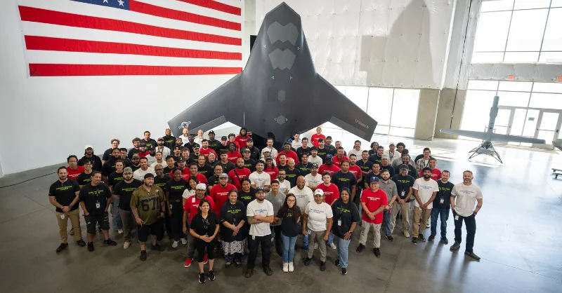
國防科技獨角獸 Shield AI 宣布達成重大併購，將以最高 53 億美元收購反無人機雷達製造商 Echodyne。在推動收購的同時，該公司同步完成了規模達 25 億美元的龐大綜合融資計畫。此筆融資包含 10 億美元的 H 輪股權融資、來自黑石集團的 10 億美元結構性股權，以及摩根大通提供的 5 億美元債務融資。完成後 Shield AI 投後估值飆升至 288 億美元，相較於今年 3 月的 127 億美元翻倍有餘。透過技術整併與充沛資本，該公司加速建構自主防衛生態系。
公共安全科技巨頭 Axon 宣布擴大對無人機製造商 Skydio 的策略投資，注資總額達 12 億美元。這筆交易由約六成現金與四成股票組成，以 52 億美元的投前估值進行交易。完成增資後，Axon 在 Skydio 的持股比例由原先的約 15% 大幅提升至 37%。作為投資協議的核心部分，Axon 順利取得了 Skydio 在美國與加拿大公共安全市場的獨家經銷權限。此舉大幅強化了雙方在警用與應急無人機領域的市占率，進一步鞏固兩者的長期戰略合作關係。
曾於 2014 年至 2022 年間掌舵 Meta 財務體系的策略長 Dave Wehner，正式於社群平台 X 上宣布離職消息。他將加入成長迅猛的 AI 推理新創公司 Fireworks 出任財務長（CFO），未來將全面主導該公司的財務擴張與日常營運架構。Fireworks 發展極為迅速，在今年 7 月的 D 輪融資中估值已達 175 億美元。截至 2026 年年中，該公司的年化營收更已突破 10 億美元大關。重量級老牌科技高管的加盟，反映出頂尖人才正快速流向新一代具備實際變現能力的 AI 基礎設施新創。
據《商業內幕》（Business Insider）引述消息人士報導，AI 推理服務商 Fireworks 正積極洽談展開新一輪融資活動。該輪融資的目標估值區間設定在 300 億至 400 億美元之間，展現出高度的市場自信。若順利以此區間完成交易，其身價將較今年 7 月 D 輪融資的 175 億美元估值幾近翻倍成長。該公司近期年化營收表現亮眼，成為推升其估值水漲船高的關鍵支撐。在各界對 AI 推理算力需求暴增的背景下，該公司正加速吸納更多市場資本以擴充競爭壁壘。
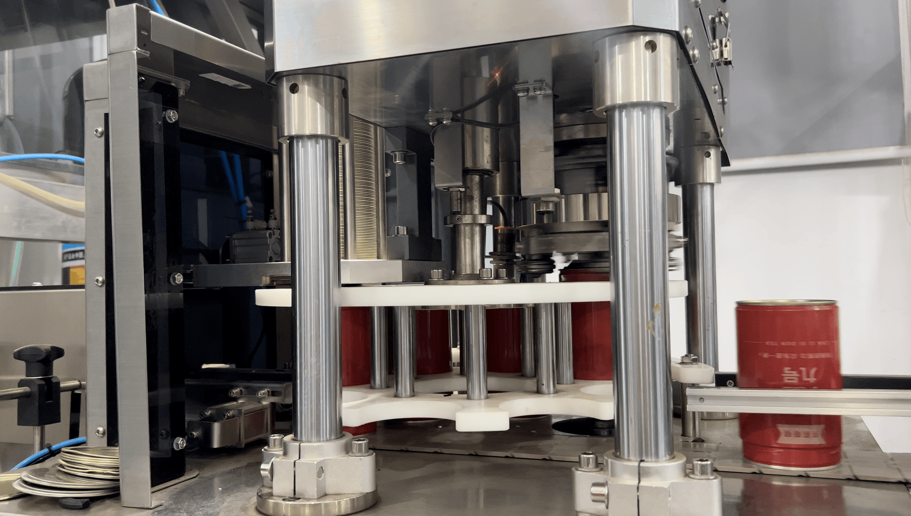
（後續）在先前收購提議遭北京當局否決後，軟銀集團與工業巨頭 ABB 正緊急研討應變方案。雙方正評估將 ABB 旗下的中國機器人業務完全剝離並另設新公司，藉此設法通過嚴格的安全審查程序。與此同時，ABB 也未放棄其他出路，目前已開始主動接觸其他潛在買方，該中國部門的市場估值約在 20 億至 30 億美元之間。此外，推動該業務分拆獨立上市亦被列入考量的備選路徑之中。地緣政治與監管審查的加劇，迫使跨國科技併購案必須採取更複雜的架構重組策略。
馬斯克在巴倫投資大會上再次拋出震撼市場的營運展望，聲稱 SpaceX 在今年 12 月年化收入將突破 1000 億美元。他更進一步樂觀預測，明年 12 月 SpaceX 的年化收入甚至有望跨越 5000 億美元門檻。針對旗下 AI 企業 xAI 的硬體布局，馬斯克宣布其 Terafab 晶片製造廠目標實現每年生產一太瓦（Terawatt）算力晶片。這一驚人的產能目標，約相當於明年全球 AI 晶片總產量的 30 倍之多。這些宏大願景再次展現其推動極限製造的野心，但也引發外界對其實際可行性的廣泛討論。
港股 AI 大模型類股週五早盤遭遇重挫，智譜股價急瀉 15.4% 創九個月新低，MiniMax 亦重挫 12.2%。市場傳出此波拋售潮主要受全市場 AI 概念股賣壓影響，甚至可能對 Anthropic IPO 時程構成威脅。自 7 月高點以來，智譜股價最大回撤已超過 75%，MiniMax 回撤也超過 60%。財報顯示，智譜 2026 上半年收入達 9.54 億元、年增 399.7%，API 收入占比更攀升至 86.5%。然而，其綜合毛利率從 50% 腰斬至 26.4%，經調整淨虧損更擴大至 19.64 億元，財務壓力顯著增加。
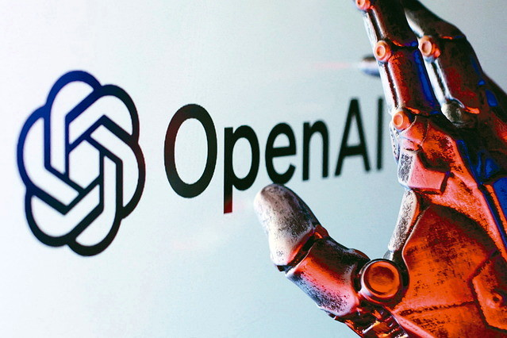
OpenAI 正式宣布收購程式開發工具新創 Pierre Computer Company，藉此深化軟體工程領域布局。Pierre 旗下的 Code Storage 與各項開源工具，先前已被整合並應用於 Codex App 的檔案導覽與代碼變更審查流程中。目前該筆交易的具體收購金額尚未對外公布，且整體交易仍須滿足慣例成交條件並取得監管機構批准。OpenAI 特別承諾，在完成收購程序之後，將會持續維護並支援 Pierre 現有的開源專案生態。這項併購案有助於進一步提升 Codex 平台對專業開發人員的工作流程整合度。
中國 AI 新創階躍星辰（StepFun）近期全面上調了旗下 3 款核心語音模型的 API 調用價格，展現定價策略轉變。其中，StepAudio 2.5 ASR 模型費用由原本每 3600 秒 0.022 美元調升至 0.05 美元，漲幅高達 127.3%。除了該主力模型外，另外兩款串流 ASR 語音辨識模型的調價幅度亦雙雙超過 120%。在過去大模型普遍經歷激烈的價格戰之際，階躍星辰大幅調升服務費率的舉措顯得格外引人注目。這項調價動作反映出運算成本帶來的壓力，或是業者意圖藉由調高門檻以改善營運利潤。
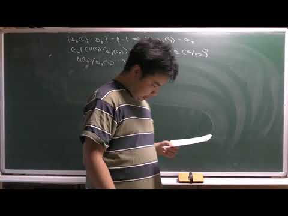
大灣區大學團隊與上海人工智慧實驗室攜手合作，成功利用科學大模型 Intern-S2 完成了三維 Ghys 猜想的完整數學證明。這項源自 1995 年的經典動力系統幾何難題長期未解，如今在 AI 輔助下取得了突破性進展。北京大學團隊隨後使用 SHEAF 框架，對證明過程中的全部核心定理進行了嚴格的電腦形式化驗證，確認邏輯推導無誤。目前相關論文已發布於 arXiv 預印本平台，形式化驗證程式碼亦全面開源。這項成就開創了前沿科學大模型與形式化數學驗證相互結合的全新研究範式。
英偉達發表全新的 Reshard collective 通訊技術，著力解決強化學習後訓練階段的高延遲瓶頸。該技術專注於加速將訓練完成的新權重從訓練 GPU 快速複製至推理 GPU 的通訊環節，整體同步速度提升了 2.7 至 5.7 倍。在參數量達 6,710 億（671B）的 DeepSeek v3 模型測試中，權重同步延遲由原本的 14.9 秒劇降至僅 2.6 秒。英偉達亦同步開源了 NCCL M2N Reshard 參考實作，以促進大規模分散式系統的優化普及。這項技術為超大規模語言模型的強化學習訓練提供了關鍵的基礎設施效能支援。
微軟研究院與上海交通大學攜手合作，共同推出名為 Argus 的自主研究運行時架構。該架構依託證據驅動的多 Agent 閉環機制，專為統籌並執行長週期的複雜科研專案而設計。在涉及 AI 系統、數學、晶片設計與科學發現等領域的 27 個專案實驗中，系統累計連續運行 1,548 小時且全程無需密集的人工干預。這項研究成果證明了智慧體具備自主開展長程科研探索的可靠性。其長期穩定的自主推進能力，為實現高度自主化的 AI 科學實驗室邁出了重要一步。
微軟研究院與 GitHub Next 正式發表名為 PDD Kit 的全新軟體工具，以數學嚴密性提升代碼生成安全性。該系統透過形式化驗證機制，深入檢查 AI 自動生成的程式碼是否精確符合軟體開發者的規格要求與預期邏輯。研究團隊在一款約 5,000 行的 Rust 全端應用程式中成功展示了驗證流程，證實了該方法在實際軟體工程中的可行性。目前 PDD Kit 處於研究原型階段並提供有限預覽，供特定開發者進行早期評估。該方案為消除大語言模型在編寫程式碼時產生的潛在邏輯漏洞與幻覺提供了強有力的數學防線。
蘋果公司研究團隊在 arXiv 提交論文，正式公開自主研發的人形機器人自主控制系統「HALO」。該系統僅使用 1,000 個程序化虛擬家庭環境所生成的 300 小時合成數據完成訓練，展現了高超的模擬轉真實遷移能力。在部署至宇樹科技 G1 人形機器人後，系統於 6 個完全未建圖的真實環境中順利完成 360 次單項任務，平均任務成功率高達 91%。HALO 的頂層工作流編排與決策層調用了千問（Qwen）大模型進行驅動。此研究展示了蘋果在跨環境具身智慧與大模型控制系統領域的前沿技術佈局。
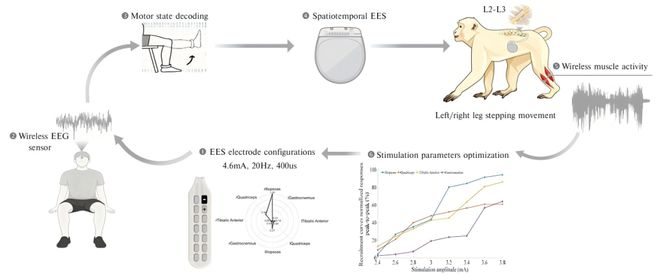
生技醫療公司 Exin Therapeutics 將 GPT-6.1 Sol 引入活體小鼠腦部微創手術，驗證其術中即時導航能力。在模型連續參與的三輪手術定位過程中，系統主要藉助外科醫生的即時反饋進行上下文學習。臨床實驗數據顯示，該模型的腦部定位誤差由最初的 0.6 毫米大幅縮小至 0.3 毫米，定位精確度提升一倍。此外，搜尋關鍵解剖標誌所需的耗時也由 169 秒大幅壓縮至 86 秒。這項試驗有力驗證了高階大模型在精細神經外科手術中具備優異的即時適應力與臨床輔助價值。
英偉達與紐約大學等學術機構聯合提出 TacitVLA 架構，針對視覺語言動作（VLA）模型的推論機制展開徹底重構。新技術將顯式推理文本轉變為純粹的訓練信號，使機器人在實際操控環境時無須等待冗長的文本生成即可直接輸出控制指令。評測顯示，TacitVLA 在四項機器人基準任務上的成功率與顯式推理模型相當，而執行延遲最多降低達 3.4 倍。在 RMBench 評測基準中，該架構的綜合成績亦大幅提升了 21 個百分點。這項創新解決了即時機器人控制對高響應速率與高決策精度的雙重要求。
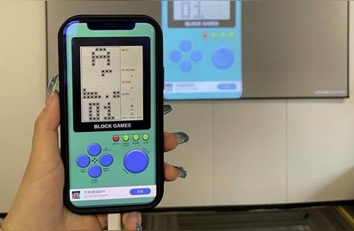
艾倫人工智慧研究所（Ai2）發布全新研究成果 ToyBlocks，這是其 FoundationWorlds 模擬系列的開篇之作。該研究完全依賴程序合成生成的桌面虛擬積木數據，來訓練機械臂的高層規劃器與底層控制器。在未進行任何真實物理數據微調的前提下，研究團隊將模型直接部署至真實的 Franka 機械臂上。在實機驗證測試中，機械臂順利完成了 30 項完整操作任務中的 15 項。這項成果凸顯了純虛擬合成環境在機器人策略訓練與降低真實數據採集門檻上的廣闊前景。
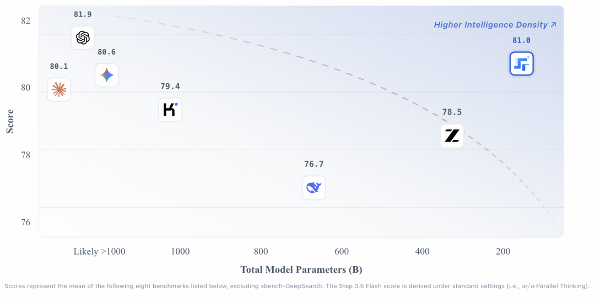
艾倫人工智慧研究所（Ai2）與紐約大學（NYU）共同發布名為 StateBench 的評測基準，對大型模型的長程狀態追蹤能力展開極限考驗。該基準將傳統評測中的狀態追蹤長度，從僅有的 8 次指派大幅擴展拉長至多達 64,000 次。實驗數據表明，在面對最長且難度最高的狀態更迭任務時，當前最強的四款前沿模型得分均落在 13% 或以下。這項測試揭露了現行語言模型在面對極長生命週期與高密度狀態更替時普遍存在的架構局限。該基準的提出，促使開發者重新審視模型在長程推理與複雜狀態記憶上的本質缺陷。
11 月 5 日公開的預印本論文《The Memory Trap》指出，賦予 Agent 長期記憶功能可能帶來未曾預料的安全風險。研究團隊藉由對比具備記憶與無記憶的互動會話，發現智慧體記錄的真實筆記在跨任務情境下容易產生嚴重誤導。具體而言，使用者在低風險編碼場景中要求跳過確認的行為習慣會被 Agent 記憶，並在後續的高風險關鍵任務中被錯誤沿用。評測顯示，包含 Claude Sonnet、Opus、Fable 以及 GPT-5.6 在內的六款主流前沿模型全數受到該陷阱干擾。此項發現對當前智慧體安全對齊與跨情境權限繼承機制敲響了警鐘。
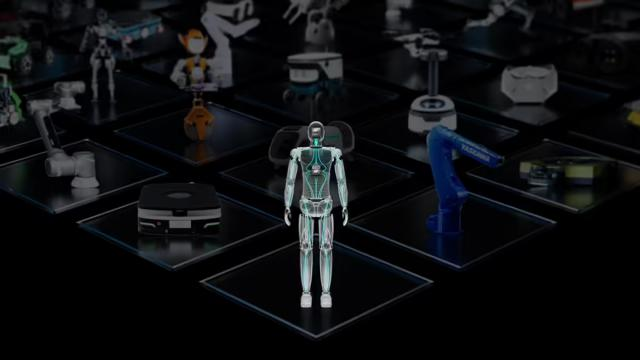
最新發表的研究論文《NEO-VLA》於 11 月 5 日登上 Hugging Face 每日論文排行榜榜首。該研究打破傳統慣例，提出了一種捨棄預訓練視覺編碼器的原生視覺語言動作（VLA）策略架構。該系統讓機器人的動作決策模組直接解析原始像素資料，徹底擺脫了固定視覺摘要所帶來的資訊壓縮與偏差。消除了傳統視覺編碼瓶頸後，智慧體在精確空間理解與動作反應上展現出更高的適應性。這項工作為具身智慧端到端感知與動作生成的演進路徑提供了全新的研究視角。
布朗大學研究團隊於最新論文中發布演化搜尋架構 SwarmEvolve，探索更高效的科學計算方法。該研究不再依賴產生文字思維鏈的傳統 LLM Agent，而是利用數百個輕量級智慧體直接在潛空間（latent space）中展開平行推理。這種設計有效排除了文字生成過程中的延遲瓶頸與運算開銷，大幅加速了演化式搜尋與優化進程。實驗結果證實，潛空間原生智慧體群體在多目標探索與科學問題求解上展現出驚人的效率。這項突破有望顯著變革由 AI 驅動的科學假設發現與高維參數優化流程。
卡內基美隆大學（CMU）於 arXiv 發布名為 ServerBench 的基準測試，評估編碼 Agent 設計全套系統軟體的實戰水準。研究選取了 11 款編碼智慧體模型，要求其各自獨立設計一套完整的 LLM 推理服務架構，並以每美元 GPU 成本獲得的 token 產出作為核心評分指標。測試結果顯示，Claude Sonnet 5.5 在 Gemma E4B 模型下設計出的系統，其推理性價比高達常規 vLLM 基準的 4.87 倍。然而，該模型在全部 33 次運行中共有 11 次未能通過正確性驗證，突顯出性能飛躍與穩定落地的差距。這項基準客觀度量了 AI 智慧體在承擔底層系統軟體工程設計時的真實潛力與侷限。
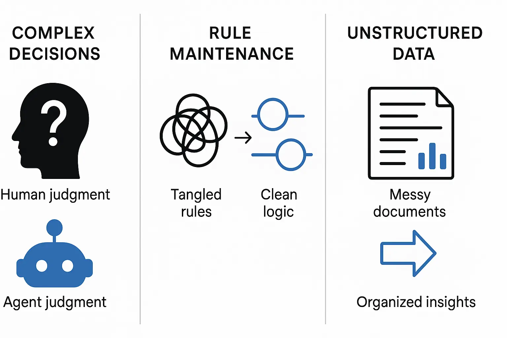
最新研究論文《CoworkOS》提出了一套以協作為核心的智慧體作業系統，旨在化解真實世界中長程任務的自動化難題。該系統在底層架構上徹底將智慧體的決策策略層與底層執行管理層相互分離。平台整合了非同步任務委派、共享可編輯工作產物、階層式工作區以及持久記憶管理等多項關鍵機制。這種設計讓多個 Agent 能夠像人類團隊成員一樣協同分工，克服長週期情境中的資訊流失與狀態脫節。該系統為推動具備高自主性與高穩健性的企業級自動化應用提供了堅固架構。
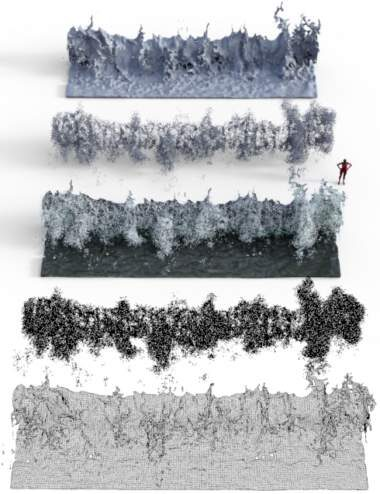
新發布的研究論文《Wave Forcing》揭示了一種面向未來的超高速串流影片生成架構。該研究在底層同時協同設計了因果去噪演算法、訓練範式與管線化運行時環境，支持連續生成影片片段。模型在長序列連續輸出的狀態下，依然能精準保持長時間跨度下的外觀特徵與動作物理連貫性。在 8 張 NVIDIA H200 GPU 的硬體環境下，該架構僅需四步生成即可達到每秒 134.8 幀的驚人生成速度。這項技術的大幅提速，為實現實時互動式影片生成與超低延遲串流內容創作鋪平了道路。
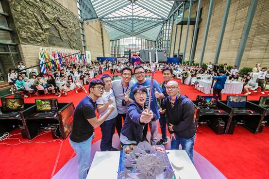
最新發布的論文《CUA-Master》推出了一款 27B 規模的電腦操作智慧體（Computer Use Agent）。該架構採用巢狀遞迴自我改進迴圈，能夠將大量操作教學影片自動轉化為結構化的可重用任務單元，並系統性收集經驗證的操作軌跡。憑藉高品質數據與遞迴改進，該 27B 模型在 OSWorld Verified 評測中取得 80.2 分的優異成績，並在 OSWorld 2.0 達到 36.9 分。這項研究成果證明，即便在中等參數量級下，合理的自監督學習機制亦能顯著突破複雜圖形介面操作的性能極限。
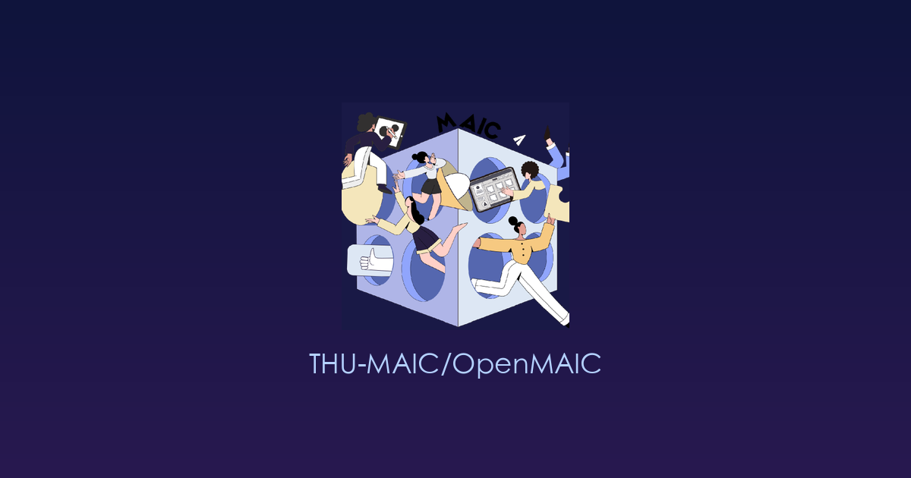
清華大學 MAIC 實驗室推出的開源專案 OpenMAIC 近期引發高度關注，其 GitHub 星標總數已順利達到 42,318 顆。該平台能夠將使用者指定的任意主題或文字文件，即時轉換為包含 AI 教師與 AI 同學的立體互動教室，並支援一鍵匯出 PPTX 格式課件。在此同時，同週新上榜的本地優先多 Agent 桌面應用 Orkas-AI/Orkas 亦展現強勁吸引力，上線首日即收穫 1,044 顆星，總星標數累計達 7,016 顆。這兩款專案的迅速爆紅，反映出多智慧體互動協同在教育培訓與本地辦公軟體市場中的巨大落地潛能。
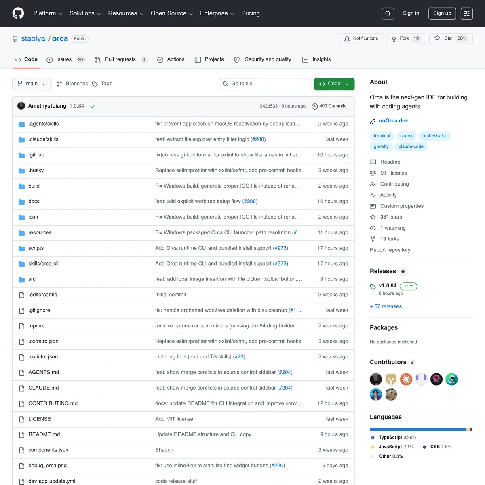
StablyAI 宣布正式開源旗下編碼 Agent 艦隊管理平台 Orca，賦予開發者以自有算力調度大型工程智慧體的能力。該平台支援使用者同時平行管理並運行包含 Claude Code 與 Codex 等多種編碼 Agent 叢集，實現大規模代碼協作。截至 11 月 7 日，Orca 專案在 GitHub 上的星標數已攀升至 11.8 萬顆，僅 11 月 7 日單日就新增高達 6,800 顆星。該專案迅速躋身當週社群成長最快的 AI 開源工具倉庫之列。其熱度凸顯出業界對於低成本調度與整合異質編碼智慧體工具鏈的迫切需求。
在 11 月 7 日的 GitHub 趨勢日榜中，Vercel 打造的專用命令列工具 agent-browser 榮登榜首，專案星標總數高達 46,403 顆。該工具採用 Rust 語言編寫，專門為 AI 智慧體提供高效能、低開銷的無頭瀏覽器控制接口。緊隨其後的是 Cloudflare 發布的 security-audit-skill 專案，單日星標暴增 2,088 顆，強勢佔據榜單第二名。與此同時，Google skills 與 Anthropic skills 等關聯專案也在同日攜手登榜，引發廣泛關注。此日榜趨勢強烈反映出各大科技巨頭正加速在 Agent 自動化操控與安全工具生態中搶佔技術高地。
Hugging Face 於 11 月 8 日正式推出一份內容詳實、篇幅約 7 萬字的免費 Mixture-of-Experts（MoE）實戰訓練手冊。該指南彙整了團隊內部在使用 Megatron-LM 框架、消耗約 80 萬 GPU 小時的大規模實戰訓練中所沉澱的核心經驗。手冊涵蓋了稀疏門控路由器架構設計、動態負載平衡演算法、all-to-all 通訊重疊優化以及推論 Serving 等全鏈路關鍵技術細節。透過向開源社群無保留地公開工業級工程心得，該手冊大幅降低了訓練百億級稀疏架構模型的技術試錯成本。這項資源的發布將有力促進開源社群在大規模分散式 MoE 模型上的研發與應用落地。
Hugging Face 旗下 Harness Hub 於 11 月 6 日發布全新 LoRA 適配器，專注於解決 Agent 調用工具過於頻繁與冗餘的工程痛點。該模型採用 GRPO 演算法，在保持 pi、opencode 與 hermes 等既有評測 harness 架構完全不變的前提下進行精準訓練。測試數據顯示，pi 適配器將 Agent 工具呼叫次數大幅降低了 39%，hermes 適配器亦達成減少 20% 工具呼叫的成效。與此同時，在涵蓋 100 項嚴苛數據分析任務的基準測試中，其任務解決準確率與未精簡前無顯著差異。這項技術為降低智慧體推論計算成本、減少多餘 API 調用提供了切實可行的優化方案。

MiniMax 創始人闫俊杰罕見接受 Scottish Mortgage 播客訪問表示，美國正以暴力投入算力的方式推進 AI，而中國模型已達到美國頂尖模型約 95% 的性能，成本卻僅為十分之一，工程效率正在追趕算力規模。截至 8 月，MiniMax 的年化經常性收入已超過 8 億美元，上半年營收為 1.166 億美元，顯示其商業化已有實質進展。這番表態呼應了中國大模型圈近期的主流敘事：以更少的算力、更低的成本逼近前沿性能。不過「95% 性能」的說法來自創始人自述，未經第三方驗證，市場仍會以實際基準與採用情況來檢驗。
中國電信、長飛光纖與中興通訊於 11 月 7 日宣布，完成全球首個千公里空芯光纖雙向實時傳輸驗證，在 1007.48 公里線路上實現雙向各 64Tb/s 同步傳輸，相當於每秒可傳 160 部 4K 電影。空芯光纖的時延比實芯光纖低約 30%，單程僅 3.43 毫秒，創下空芯光纖實時傳輸距離的新世界紀錄。對 AI 資料中心與跨區域算力調度而言，更低的傳輸時延意味著更快的模型同步與推理回應。這項驗證把空芯光纖從實驗室推向實用部署，為下一代算力網路的基礎設施提供了新選項。
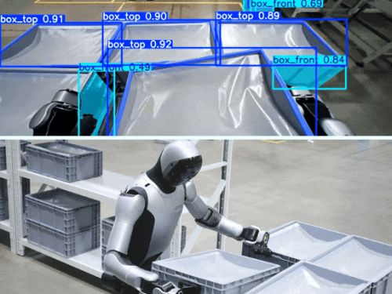
財聯社進博會觀察指出，機器人「大腦」再添新變量，但規模上崗還差「最後幾毫米」。宇樹王興興表示，多模態模型的理解能力已經不錯，最大問題是輸入輸出對齊的「最後幾毫米」誤差，也就是模型想得對、但手做得不夠準。通用模型開始涉足動作控制，業界預期具身智能的「ChatGPT 時刻」約在 2027 年下半年。這個判斷把具身智能的時間表具體化了：理解已接近到位，真正的瓶頸在動作的精準執行。誰能先把最後幾毫米補齊，誰就能率先把機器人送進真實場景。
合肥工業大學於 11 月 6 日發布國內首個具身智能專用「心智大模型」心問，為機器人裝上「情感大腦」。心問首創動態心理評估體系，可辨識 0.3 秒面部肌肉顫動傳遞的情緒信號，並同步發布《社會機器人情感交互白皮書》。這款模型瞄準的是服務型機器人最欠缺的一環：不只聽懂指令，還要讀懂人的情緒狀態。隨著機器人走進家庭、醫療與照護場景，情緒理解可能成為決定使用者是否接受機器人的關鍵。心問的發布，顯示中國具身智能的布局正從動作能力延伸到情感交互。
量子位對話阿丘科技創始人黃耀指出，半導體車間正悄悄用上 AI，以多模態模型加上智能體把老師傅的經驗沉澱進產線，晶圓切割識別精度提升後，設備綜合效率與產能可提升約 25%。過去產線出問題總要半夜把老師傅叫起來救火，如今 AI 能先一步辨識異常、給出處置建議，讓經驗不再只存在少數人腦中。這個案例顯示工業 AI 正在從落地驗證走向規模化複製，半導體只是起點。對製造業而言，把老師傅的 Know-how 變成可複製的模型資產，可能是 AI 創造的最實在的價值之一。
司馬光砸缸、荊軻刺秦王、曹沖秤象、武松打虎等歷史典故，近日被 AI 以老舊監控畫質、雪花雜訊與時間戳重現，在網路瘋傳。這類「偽紀實」風格的生成影像，把莊嚴的歷史敘事包裝成調閱監視器的既視感，反差本身就是笑點與傳播動力。AI 生成影像正從寫實場景走向風格化創作，創作者開始玩弄媒介本身的質感與可信度。這波爆紅也提醒觀眾，當 AI 能逼真模擬監控畫面這類「證據感」最強的影像形式，影像的真實性判斷將變得更加困難。

DeepSeek 產品部公布 Agent 工具 Harness 最新數據，截至 11 月 4 日，以官方 API 用戶計日活達 154 萬、日耗 Token 約 92 兆，第三方外掛約 3.5 萬個。約六成日活用戶製作或安裝過外掛，顯示 Harness 已從單純的 Agent 工具，長成一個有開發者生態的平台。官方下一步將建立外掛市集與作者激勵計畫，進一步把外掛生態變現。值得留意的是，這組數據公布的同一週，DeepSeek 服務曾兩度短暫中斷，爆發式增長與穩定性之間的拉扯，正在成為 DeepSeek 必須面對的課題。
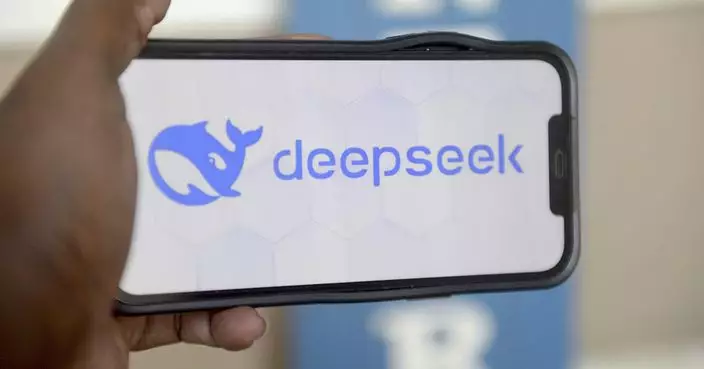
外媒披露，DeepSeek 最新一輪融資規模擴大到 1055 億元人民幣、估值 6155 億元，投資方除寧德時代、中國移動外，還包括長鑫存儲、中芯國際、vivo、美的、立訊精密、吉利、美團、小紅書等近 30 家企業。資金將用於算力與 AI 軟硬體落地布局，投資方名單橫跨電池、電信、半導體、手機、家電與汽車，幾乎是一份中國製造業龍頭的名錄。這輪融資的規模與陣容，顯示 DeepSeek 已從一家模型公司，升級為中國 AI 產業鏈共同押注的基礎設施。估值 6155 億元的數字，也讓 DeepSeek 躋身全球最有價值的 AI 新創之列。
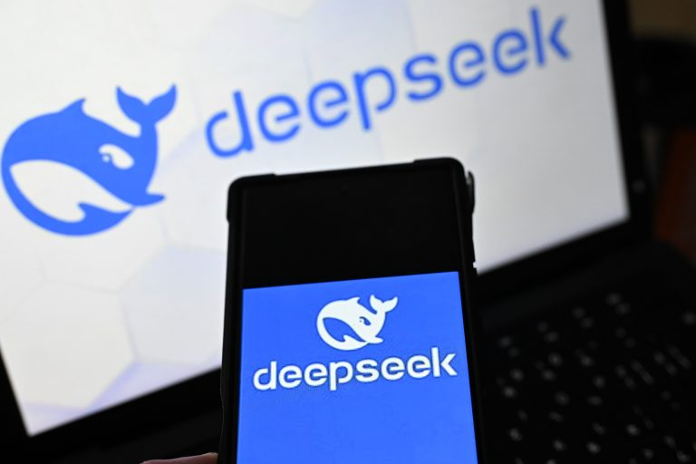
DeepSeek 創始人梁文鋒近期密集會見具身智能創業者，並已確定兩個具身智能投資項目，分別是具身大腦公司 Winverse 與具身運動控制公司理格萬物。Winverse 創辦人胡瀚曾負責騰訊混元視覺語言模型，理格萬物則專注具身運動控制，兩者恰好覆蓋了機器人的「大腦」與「小腦」。另傳下一代模型 V5 計畫基於昇騰 950 晶片預訓練、明年落地，顯示 DeepSeek 的算力布局正與國產晶片深度綁定。從模型公司跨入具身投資，DeepSeek 正在把觸角伸向 AI 落地的下一個戰場。

阿里巴巴董事會主席蔡崇信在 2026 世界互聯網大會烏鎮峰會演講時表示，只有開源才能普及 AI，並公布千問已開源超過 470 款模型、全球累計下載量突破 40 億、衍生模型超 33 萬個。魔搭社區匯聚全球 239 個國家和地區的 3300 萬用戶，成為中國開源模型走向全球的主要入口。這番表態把阿里的開源路線提升到了理念層次：開源不是行銷手段，而是讓 AI 普及的前提。40 億次下載的數字，也讓千問成為全球下載量最大的開源模型家族之一。
截至 2026 年 10 月，魔搭社區（ModelScope）已服務超過 3300 萬開發者、匯聚超過 27 萬個開源模型，成為國內開源模型第一入口。DeepSeek、智譜、MiniMax、階躍星辰、Kimi 等頭部模型均在此首發或同步開源，魔搭已是中國大模型發布的預設舞台。27 萬模型的數字背後，是開源生態從少數旗艦模型走向長尾繁榮的過程。對開發者而言，一個入口就能接觸到幾乎所有中國頭部開源模型，降低了選型與試用的門檻。
據 Pandaily 報導，華為在 Atlas 950 SuperPoD 上以 128 張加速卡、LoRA 方式完成 2.8 兆參數 Kimi K3.1 Pro 的微調，華為稱其 Swap Core 快取技術帶來平均 15% 的性能提升，相關數據未經獨立驗證。能用僅 128 卡微調 2.8 兆參數的模型，本身就是對國產算力與微調工程的一次展示，也呼應了 Kimi 權重開源後各家雲與晶片廠商爭相適配的熱潮。華為選擇此時公布這項成果，意在證明昇騰平台已能承接超大開源模型的微調需求。數據未經獨立驗證，實際效果仍待第三方實測檢驗。
開源庫 AirLLM 的作者 Gavin Li 展示以僅 3.72GB 視訊記憶體運行完整 1.56TB 的 Kimi K3 檢查點並產出真實 Token，證明 2.8 兆參數的超大模型可以壓進一張 4GB 顯卡。但代價是速度約每 Token 5 分鐘，一則貼文要花五小時，實用性仍相當有限。這項展示更像一場極限挑戰：它證明了超大模型在理論上可以跑在任何硬體上，只是時間成本高到不切實際。對開源社群而言，這類實驗的價值在於探索壓縮與推理技術的邊界，而非提供可用的部署方案。
中國移動雲公司與智譜於 11 月 6 日簽署戰略合作協議，聚焦國產化算力適配與模型調優、共建 Token 聯合發展中心，智譜 GLM 系列模型將接入移動雲 MaaS 平台 MoMA。雙方還將共創 AI Coding 融合產品、深耕金融與政務行業方案，把模型能力與電信雲的客戶基礎結合起來。對智譜而言，接入移動雲意味著 GLM 系列獲得了一個覆蓋政企客戶的發行管道。對中國移動而言，引入頭部大模型則是其雲業務向 AI 轉型的重要一步。
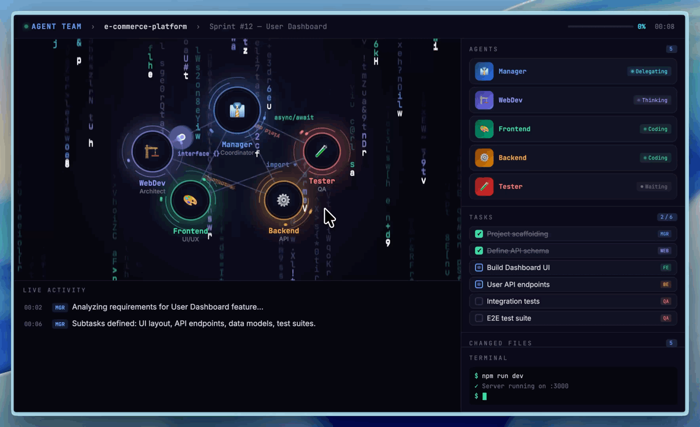
MiniMax M2 系列已排入下線時程，M2.5 與 M2.7 自 10 月 19 日起不再開放新用戶、將於 11 月 18 日下線，M Plan 與 Token Plan 用戶的請求自 10 月 19 日起自動改由 M3.1 Flash 處理。現行模型僅剩 M3 與 M3.1 Flash，顯示 MiniMax 正在收斂產品線，把資源集中到最新一代模型上。對仍在使用 M2.5 與 M2.7 的開發者而言，遷移窗口只剩不到兩週，需要盡快確認 M3.1 Flash 在各自場景下的表現與成本。這次下線也反映大模型產品的迭代速度：舊版本的上線與退場，往往只相隔數月。